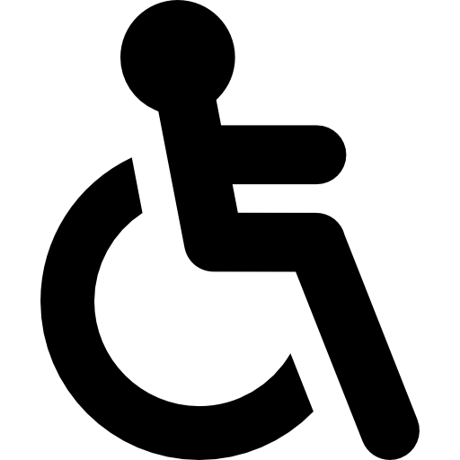

h2<!DOCTYPE html>
<html lang="pt-BR">
<head>
  <meta charset="UTF-8">
  <meta name="viewport" content="width=device-width, initial-scale=1.0">
  <title>Dashboard de Protocolos</title>
  <link rel="stylesheet" href="../CSS/Direcao.css">
  <link rel="stylesheet" href="../CSS/acessibilidade.css">
</head>
<body>

  <!-- Sidebar -->
  <div class="sidebar">
  <div>
    
  </div>
    <ul>
      <a href="../HTML/Entrada.html"><li><button>Home</button></li></a>
      <a href="../HTML/grafico.html"><li><button>Gráficos</button></li></a>
      <a href="../HTML/relatorio.html"><li><button>Relatórios</button></li></a>
      <a href="#"><li><button>Filtros</button></li></a>
      <a href="#"><li><button>Favoritos</button></li></a>   
      <a href="#"><li><button>Salvos</button></li></a>  
    </ul> 
  </div>

  <!-- Main -->
  <div class="main">
  <div class="header">
  <div class="cabecalho-logo-container">
    <button class="botao-usuario-estilo" id="open-modal-button">
      
    </button>   
  </div>
</div>

<!-- Painel de acessibilidade -->
  <div id="acessibilidade">
    <button id="btn-acess">
     
    </button>
    <div id="painel" aria-label="Menu de acessibilidade">
      <button onclick="ajustarFonte(2)" aria-label="Aumentar fonte">A+</button>
      <button onclick="ajustarFonte(-2)" aria-label="Diminuir fonte">A-</button>
      <button id="btn-contraste" aria-label="Alternar alto contraste">Alto Contraste</button>
      <button id="btn-dyslexia" aria-label="Fonte legível para dislexia">Fonte Legível</button>
    </div>
  </div>


    <!-- Menu de Filtros + Kanban -->
    <main>
      <section id="menu-filtros">
        <button class="filtro ativo">Entradas</button>
        <button class="filtro"><a href="Prazo.html">Prazo</a></button>
        <button id="abrirPainel">+</button>

        <!-- Painel escondido -->
        <div id="adicionar" class="adicionar">
          <!-- Conteúdo será carregado aqui via JS -->
        </div>
      </section>

      <section id="kanban">
        <div class="coluna" id="nao-iniciado">
          <h2 class="titulo-coluna amarelo">Não iniciado</h2>
          <div class="cards"></div>
        </div>

        <div class="coluna" id="em-andamento">
          <h2 class="titulo-coluna azul">Em Andamento</h2>
          <div class="cards"></div>
        </div>

        <div class="coluna" id="urgente">
          <h2 class="titulo-coluna vermelho">Urgente</h2>
          <div class="cards"></div>
        </div>

        <div class="coluna" id="finalizado">
          <h2 class="titulo-coluna verde">Finalizado</h2>
          <div class="cards"></div>
        </div>
      </section>
    </main>
  </div>
  

  <!-- Scripts -->
  <script src="../JS/Adiciona.js"></script>
  <script src="../JS/acessibilidade.js"></script>
</body>
</html>
